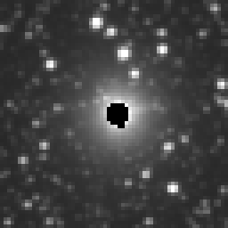
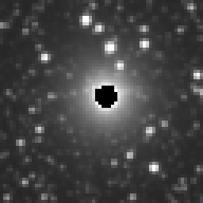
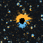
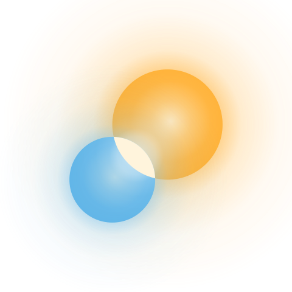

Estrella de Barnard
Enana roja, la más rápida del cielo.
10.23 ± 0.43 ″/año
Gaia DR3: 10.39

Mira qué se mueve en el cielo.
Clyde Tombaugh alternó dos placas del mismo cielo. Lo que saltó, se había movido.
Placas de Tombaugh: 23 y 29 de enero de 1930. SPHEREx: texto del reto (NASA). Barnard: 10.39″/año (Gaia DR3) ÷ 6.15″ por píxel de SPHEREx.
Sparks toma fotos de SPHEREx de distintos meses y las hace parpadear. Lo que no se movió se queda quieto. Lo que se movió, salta.
Eliges un pedazo de cielo, o escribes sus coordenadas. Desde un navegador o un teléfono.
Abrir Sparks en vivo


parpadeo · ago 2025 ↔ ago 2026 resta · ago 2026 − ago 2025Coinciden: 0.4 σ de diferencia.
data-sample/results.json · 6 puntos en D5 y D6 · paralaje de Gaia descontada
Y cuando no se puede medir algo, Sparks lo dice en vez de inventarlo.
Enana roja, la más rápida del cielo.
10.23 ± 0.43 ″/año
Gaia DR3: 10.39
La enana café más fría conocida. Gaia no la ve.
≥ 10× más luz en D6 que en D2
Movimiento 6.04 ± 0.76 contra 8.09 del catálogo: 2.7 σ, lo marcamos para revisar.
Pareja de enanas café; SPHEREx la ve como un punto.
4.21 ± 0.28 ″/año
Catálogo: 4.68 · 4 temporadas
Estrellas jóvenes que se oscurecen a ratos.
No se movió de forma medible: lo mostramos como cota superior, no como movimiento.
Variable tipo Mira.
Tan brillante que satura los seis detectores. Sparks explica por qué no hay medida.
data-new/results.json (canalización propia, 14 nov 2026) · Barnard: data-sample/results.json · D6 ≈ 4.7 µm, D2 ≈ 1.35 µm
Todo el cielo cada seis meses. Ninguna persona puede revisarlo sola, ni un programa entenderlo del todo.
de voluntarios han encontrado asteroides, cometas y enanas cafés comparando imágenes. La mayoría de las enanas cafés conocidas se encontraron así.
Sparks corre entero en el navegador, servido como sitio estático. Un pedazo de cielo más es un archivo más, no un servidor más.
NASA, texto del reto (backyardworlds.org) · los 5 campos: de 1.8 a 7.9 MB cada uno · resultados_v2.json: 0.7826
A Plutón lo encontró un joven granjero de Kansas, mirando dos veces.
Con Sparks, el siguiente lo puedes encontrar tú.
Cada chispa que se mueve tiene una huella.

Abre Sparks:
d3hfqg5g7frqp1
.cloudfront.net
Datos: NASA/IPAC IRSA · SPHEREx DR1, QR2 y QR3 · ESA Gaia DR3 · CatWISE2020 · Código: github.com/EL-CONS/SPARKS-PROJECT